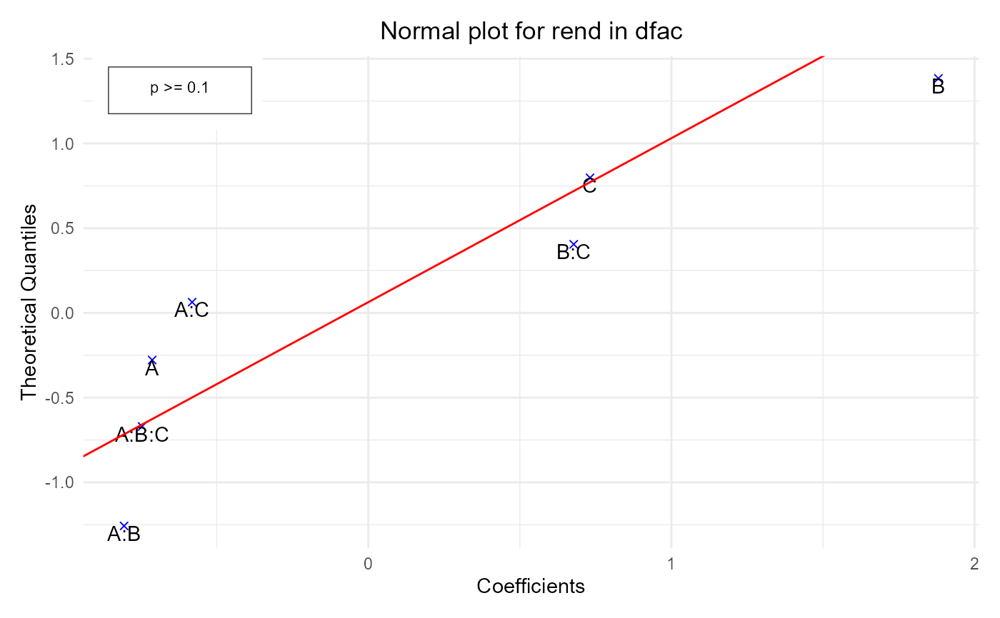
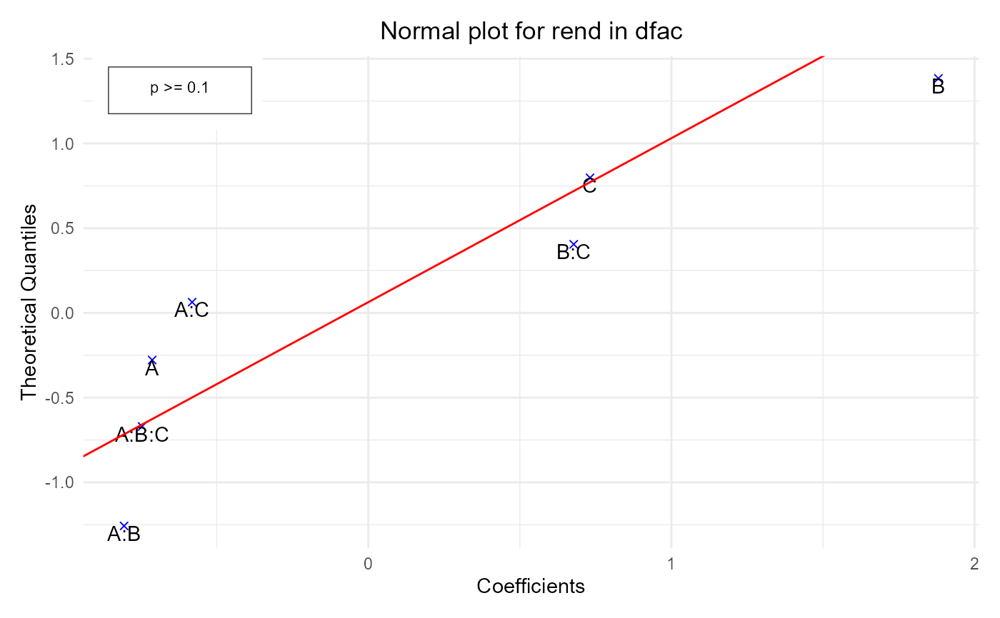

normalPlot: Normal plot
normalPlot.RdCreates a normal probability plot for the effects in a facDesign.c object.
normalPlot(
dfac,
response = NULL,
main,
ylim,
xlim,
xlab,
ylab,
pch,
col,
border = "red"
)Arguments
- dfac
An object of class
facDesign.c.- response
Response variable. If the response data frame of fdo consists of more then one responses, this variable can be used to choose just one column of the
responsedata frame. response needs to be an object of class character with length of ‘1’. It needs to be the same character as the name of the response in the response data frame that should be plotted. By defaultrespons` is set toNULL.- main
Character string specifying the main title of the plot.
- ylim
Graphical parameter. The y limits of the plot.
- xlim
Graphical parameter. The x limits (x1, x2) of the plot. Note that x1 > x2 is allowed and leads to a ‘reversed axis’.
- xlab
Character string specifying the label for the x-axis.
- ylab
Character string specifying the label for the y-axis.
- pch
Graphical parameter. Vector containing numerical values or single characters giving plotting points for the different factors. Accepts values from 0 to 25, each corresponding to a specific shape in
ggplot2(e.g., 0: square, 1: circle, 2: triangle point up, 3: plus, 4: cross).- col
Graphical parameter. Single numerical value or character string giving the color for the points (e.g., 1: black, 2: red, 3: green).
- border
Graphical parameter. Single numerical value or character string giving the color of the border line.
Value
The function normalPlot returns an invisible list containing:
- effects
a list of effects for each response in the
facDesign.cobject.- plot
The generated normal plot.
Details
If the given facDesign.c object fdo contains replicates this function will deliver a normal plot
i.e.: effects divided by the standard deviation (t-value) will be plotted against an appropriate probability
scaling (see: `ppoints`).
If the given facDesign.c object fdo contains no replications the standard error can not be calculated.
In that case the function will deliver an effect plot.
i.e.: the effects will be plotted against an appropriate probability scaling. (see: `ppoints`).
See also
Examples
# Example 1: Create a normal probability plot for a full factorial design
dfac <- facDesign(k = 3, centerCube = 4)
dfac$names(c('Factor 1', 'Factor 2', 'Factor 3'))
# Assign performance to the factorial design
rend <- c(simProc(120,140,1), simProc(80,140,1), simProc(120,140,2),
simProc(120,120,1), simProc(90,130,1.5), simProc(90,130,1.5),
simProc(80,120,2), simProc(90,130,1.5), simProc(90,130,1.5),
simProc(120,120,2), simProc(80,140,2), simProc(80,120,1))
dfac$.response(rend)
normalPlot(dfac)
 # Example 2: Create a normal probability plot with custom colors and symbols
normalPlot(dfac, col = "blue", pch = 4)

# Example 2: Create a normal probability plot with custom colors and symbols
normalPlot(dfac, col = "blue", pch = 4)
